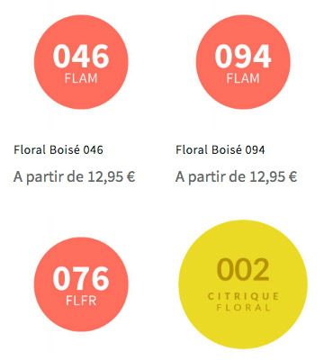
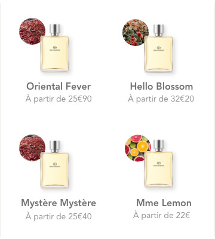
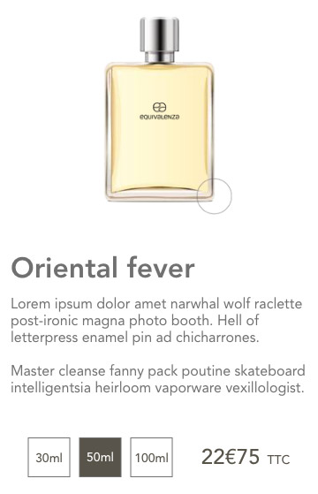
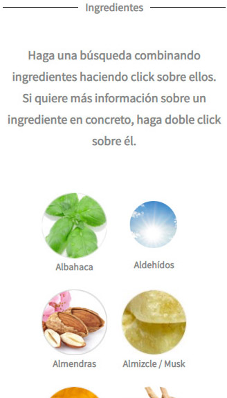
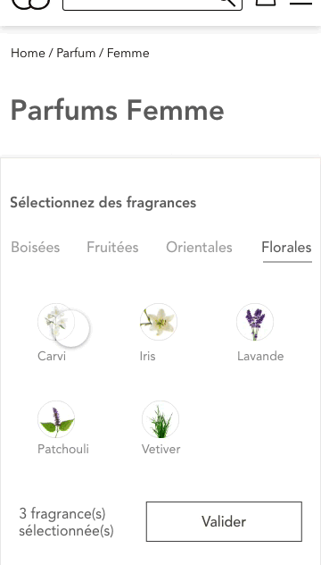

Approche
Les points essentiels sur lesquels il semble important d'insister sont l'uniformisation des contenus, notamment de la fiche produit, ainsi que sur le développement d'un système de recherches olfactives plus intuitif pour l'utilisateur.
Certains ajustements mineurs seront aussi réalisés par le biais d'un travail sur les visuels et le wording.
Uniformisation des contenus :
Élement particulièrement perturbant dans l'exploration du site, la présentation du contenu en page liste et en fiche produit est uniformisée.
Exit les éléments à taille variable et aux nuances de couleurs énigmatiques. Chaque parfum dispose d'un visuel propre, auquel une photo représentant sa famille olfactive est accolée.


Un bouton amenant l'utilisateur vers la recherche de son parfum est également implémenté.
Côté fiche produit, un visuel unique remplace les éléments graphiques disparates que l'on ne retrouve pas nécessairement d'une fiche à l'autre (pyramide olfactive, flacon).
Les composants olfactifs du parfum sont également directement disponibles en cliquant sur le flacon.


La partie « Recommandé pour », peu pertinente dans son propos, disparaît. Les ingrédients sont quant à eux revus pour être plus lisibles (la transparence dans la composition des produits cosmétiques avait fait l'objet de retours utilisateurs dans le case study Shiseido).


Enfin, l'aspect « social proof », liens de partages et commentaires, bien que chère à l'expérience client (CX), est supprimé faute d'apporter une réassurance (Aucun parfum n'est noté ou ne fait l'objet d'avis client).
Le choix d'un parfum :
Non implémentée sur la version française du site, la recherche d'un parfum selon les choix de l'utilisateur est l'une des idées forte de la marque. Malheureusement, son intégration reste perfectible.
Sélection restrictive, navigation imbriquée, le choix d'un ensemble de fragrances n'est pas assez intuitif lors d'une première prise en main. Pourtant, le résultat apporté semble assez pertinent, notamment grâce à un système de présence plus ou moins marquée des éléments sélectionnés.
Pour cette fonctionnalité, je décide de diviser les fragrances selon leur grande famille olfactive dans lesquelles l'utilisateur viendrait piocher celles qu'il souhaite dans son parfum. Une fois celles-ci sélectionnées, il peut ensuite doser la « puissance » de chaque ingrédient via un système de graphique tactile dynamique.


La validation de ce graphique lui retourne alors les parfums les plus en adéquation avec ses choix. D'autres parfums aux caractéristiques proches peuvent également être afficher au besoin.
Wording et visuels :
Parti pris personnel, l'ajout d'une photo du produit et d'un nom à ce dernier me semble pertinent dans l'expérience d'achat pour plusieurs raisons :
- Donner corps au produit
- Redonner sa « noblesse » au produit. Considéré comme un produit de luxe, le parfum devient abordable grâce à cette enseigne. Pourquoi le réduire à une simple association chimique et ne pas mettre en avant le sentiment de s'être fait plaisir à moindre coût ?
- Faciliter la mémorisation du produit et son partage via le bouche-à-oreille. Un nom, même partiel, sera davantage susceptible d'être retrouvé qu'une série de chiffre.
- Créer un imaginaire et dresser un décor pour l'utilisateur. Un wording pensé peut déjà amener le visiteur à associer un nom à des senteurs.
- Donner plus de poids aux créations Equivalenza et se dissocier de l'image « déclinaison de... » pour laquel l'image a été pointé du doigt.